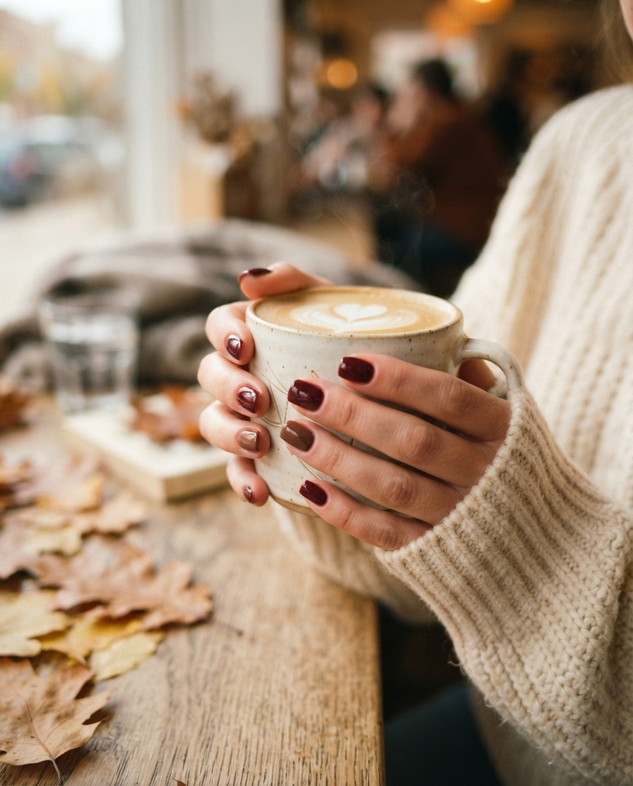

솔리드로 바르기 좋은 가을 컬러에
어울리는 손톱 모양까지 담았어요.
레드보다 깊고 블랙보다 화려한 색. 존재감이 강해서 손톱은 짧게 잘라야 모던해 보여요.
초콜릿부터 밀크·프랄린까지. 매트보다 고광택 톱코트로 마무리해야 답답해 보이지 않아요.
아트 없이 한 가지 색만 칠해도 포인트. 브라운·그레이·블랙 옷과 매치하면 모던해요.
채도 낮은 그린에 브라운·그레이 한 방울. 베이지·브라운 가을 옷과 환상의 짝꿍이에요.
본래 손톱이 은은하게 비칠 만큼 얇게 바르는 게 포인트. 손톱 모양을 깔끔하게 다듬고 아몬드나 오벌로 슬림하게 잡아주세요.
노란기 도는 손에는 브라운·카키가 자연스럽게 녹아요.
붉은기·푸른기 도는 손에는 와인빛 버건디·코발트가 깔끔해요.
톤을 덜 타는 초콜릿 브라운·밀키 화이트부터 시작해요.
진한 컬러일수록 손톱은 짧게. 손끝과 비슷한 길이로 자르고
모서리만 둥글리면 훨씬 모던해 보여요.
저장해두고 쇼핑할 때 꺼내보세요